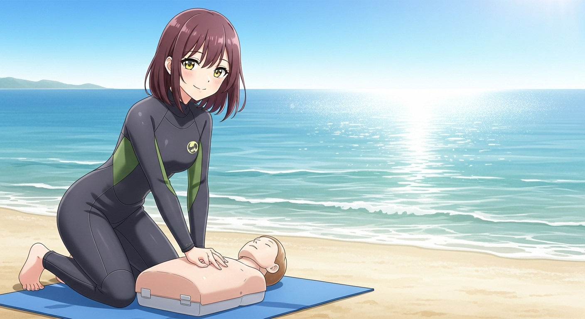
今日は cpr (心肺蘇生法) のトレーニング・ツールの話になります。
あ、cprと聞いてブラウザを閉じようとしていますね。ちょっと待ってください。もしかするとあなたが cpr を実施することで、目の前で倒れている人の命が助かるかもしれません。
心肺停止から cpr 開始までの時間が早ければ早いほど救命率は高いことが知られています。10 分間なにも行われなければほぼ助からないことも知られています。
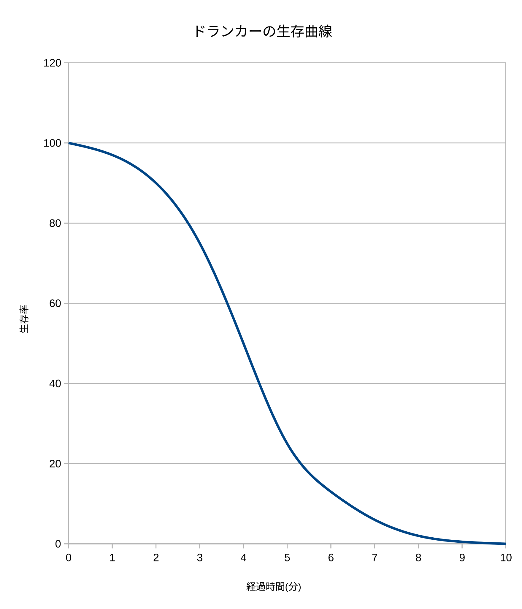
このグラフは cpr などの bls (basic life support) を学ぶと必ずでてくるドランカーの救命曲線と呼ばれるグラフです。
呼吸停止から直ちに cpr を実施すれば救命率は最も高くなります。2 分後になると救命率は 90% に低下します。3 分後になると救命率は 75% 程度にまで低下します。そして 4 分後であれば 50%、5 分後であれば 25% まで救命率が低下し、10 分後に cpr を開始する場合は救命率は 0% となります。
救急車が現場に到着するまで、現在の日本では平均で 10 分弱かかると言われています。もし人が倒れて心肺停止になり、居合わせた人が何もしないでいると、その人はほぼ 100% 助からないと言えます。
ですから cpr はいかに早く開始するかが非常に重要だと言えます。バイスタンダー (倒れた人のすぐそばに居合わせた人 ) による cpr の実施が非常に重要であると言われる所以です。
cpr なんてできない！！とう声も聞こえてきそうですが、大丈夫です。力のないお子さんなどではなく、一般的な成人した人なら少し練習すれば誰でもできます。
もちろん、より正確に、人工呼吸も、と cpr の内容をバージョンアップすればするほど救命率は上がっていきます。ですが、それだと cpr の敷居が高くなりすぎるので、現在では通常のバイスタンダーによる cpr は胸部圧迫だけでもよいとされています。
自分が cpr なんてやっていいのか、と恐れるかもしれません。でもなにもせずにボーッと救急車の到着を待っていると、目の前の人は助かりません。なにもしないよりは、たとえ完璧でなくても cpr を実施するほうが救命できる確率はぐっと上がります。
また最近では aed を使うことが一般的です。aed は除細動の指示だけでなく、胸部圧迫のペースもすべて音声で教えてくれます。あなたに必要なのは aed の指示に従うことだけです。是非とも目の前の命を救うために aed の指示に従って cpr にチャレンジしてください。
それと覚えておいていただきたいのは、cpr を完璧に行ったとしても、助からないことは少なくないということです。それは cpr を実施したあなたが悪いわけではありません。もし救命に至らなかったとしても、決してご自身を責めないでください。やはり救命に至らないことはあるのです。それどころか、倒れた人を発見して cpr を開始したときには、実はもうその人は亡くなっていてどうしようもなかったということもあるのです。
それでもあなたはその人が助かる可能性を信じて、その人の命を助けるために全力を傾けたのです。その行為はとても人として尊いものです。たとえ救命できなかったとしても、非難されたり見下されるいわれはまったくありません。
なんどでも言いますが、誰かの命を助けようとした、あなたの行為は人間として非常に尊いものなのです。
救命コーチングアプリ liv とは aec を使った cpr の学習を支援する web アプリケーションです。公益財団法人日本aed財団が無料で公開しています。web アプリケーションですからほぼ全てのスマートフォンで使うことができます。無料で使うことができます。アカウントを作る必要もありません。
救命コーチングアプリ liv でできることは以下の 2 つです。
ここでは 救命コーチングアプリ liv を使った、実際の胸部圧迫のペース維持の練習に絞って触れていきます。
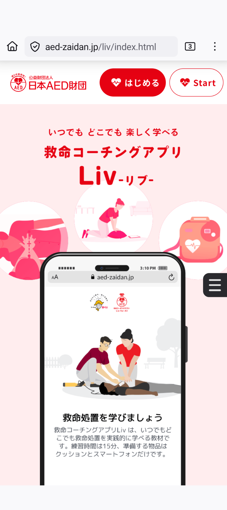
救命コーチングアプリ liv は単なる web ですから、まずはブラウザで救命コーチングアプリ liv のホームページを開きます。
図のようなページが開きます。
"はじめる" ボタンをタップしてください。もし母語が英語の方は "start" をタップしてください。このエントリーでは日本語の "はじめる" ボタンをタップしたものとして、説明を進めます。
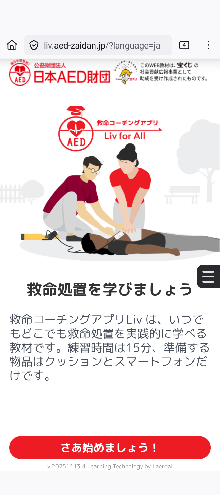
このページが救命コーチングアプリ liv の開始ページになります。
"さあ始めましょう！" ボタンをタップしてください。しばらくはバイスタンダーによる cpr の意義や、動画を含む様々なコンテンツが続きます。ときどき学んだ知識の確認クイズもあります。
初めての人は、skip せずに全部学びましょう。難しい説明はありません。
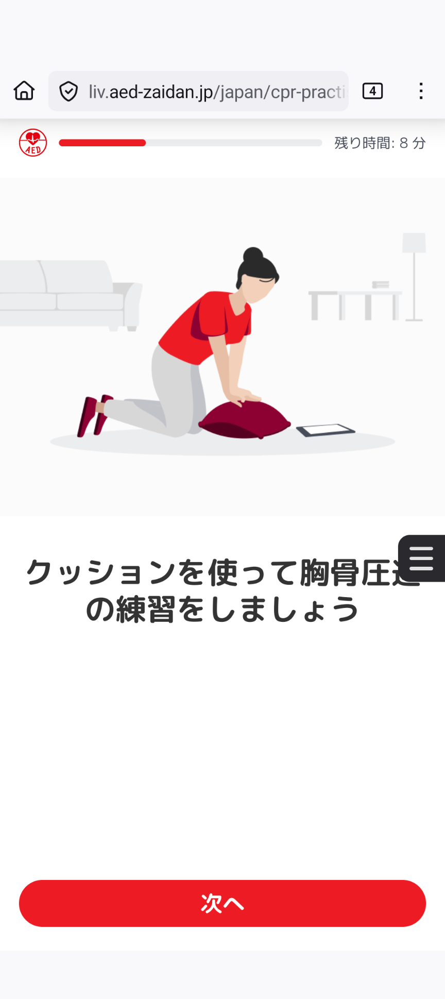
コンテンツを観たり読んだり、クイズに答えていくと、やがて実際の cpr の胸骨圧迫の練習のページがでてきます。
"次へ" をタップします。
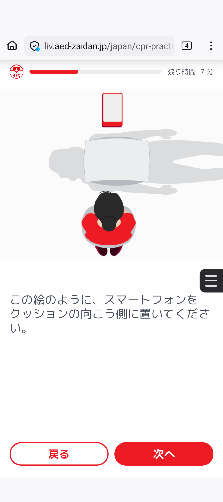
どのようにスマホ、心肺停止者を模したクッション、自分の位置も一発でわかるように表示されます。その位置取りを取ってください。
位置取りが終わって準備ができたら、"次へ" をタップします。
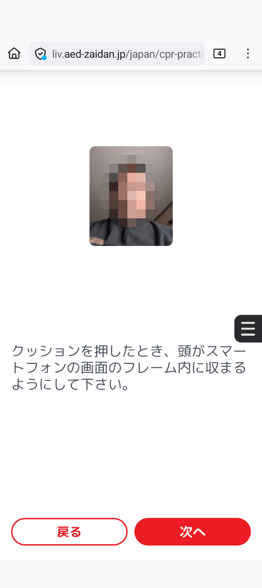
画面の位置に頭部が表示されるように、スマートフォンと自分の位置を調整します。
それ終わって準備ができたら、"次へ" をタップします。
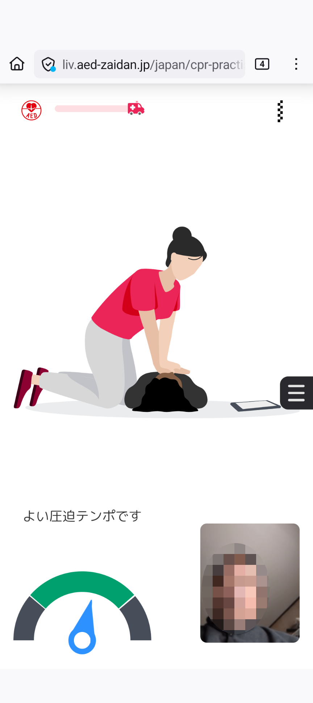
画面が切り替わり、しばらく説明があったあとに、カウントダウンが始まります。始まったらこれまでのコンテンツで学んだフォームで、胸骨圧迫のトレーニングを始めます。
トレーニングの時間は、画面情報の赤い救急車が、ゴールラインに達するまでです。
胸骨圧迫のペースはアプリから流れるメトロノームの音に合わせるだけでいいので、とても簡単です。
ペースや圧迫の方法がまずいときは、下のメーターの針が、緑色の領域からはずれるので、針が緑色の間に常にあることを目指すことになります。
赤い救急車がゴールラインに達したらトレーニング終了です。トレーニング 1 回の時間は 60 秒でした。
60 秒のトレーニングではとても足りないので、終了画面で "もう一度胸骨圧迫を練習する" を何度も何度も押すことにはなりそうです。トレーニング時間を設定できるとありがたいなと思いました。
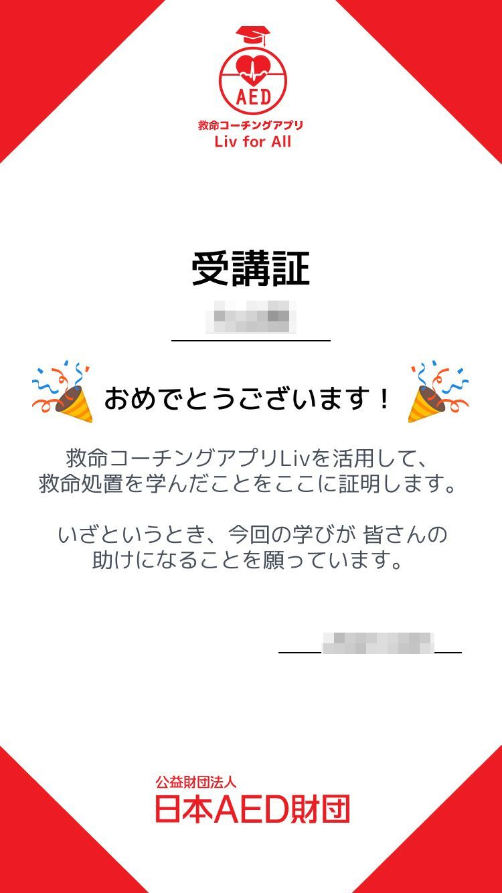
一通りコンテンツ全体の利用を終えると、ユーザ名とメールアドレスの入力が求められます。受講証が発行されるとこのとなので、ぼくの名前とメールアドレスを入力して送信しました。すると図のような受講証画像が送られてきました。
15 分で cpr を学べるという売り文句の web アプリです。cpr というものを概観するのにはいいのではないでしょうか。
cpr の実際の胸骨圧迫のトレーニングも、ペースの把握だけなら、これでいいかもしれません。何もしないよりは遥かによいと思いました。
実際の胸骨圧迫のトレーニングの前後に、cpr の実施に自信があるか？という設問が 5 段階評価で訊ねられます。ぼくはトレーニング前の設問もトレーニング後の設問も、どちらにもどちらとも言えないと答えました。
これはなぜかというと、そもそも cpr を実施したからと言って助かるとは限らないことを知っていますし、そもそも胸骨圧迫で重要とされている、圧迫の深さが 5〜6cm を維持できているのかモニターする方法がないこと、そして圧迫後の開放がきちんとできているのかモニターする方法がないことによります。わかるのはペースの維持だけはできているということだけでした。
これだけで cpr ができていると自信を持つのはぼくには無理でした。
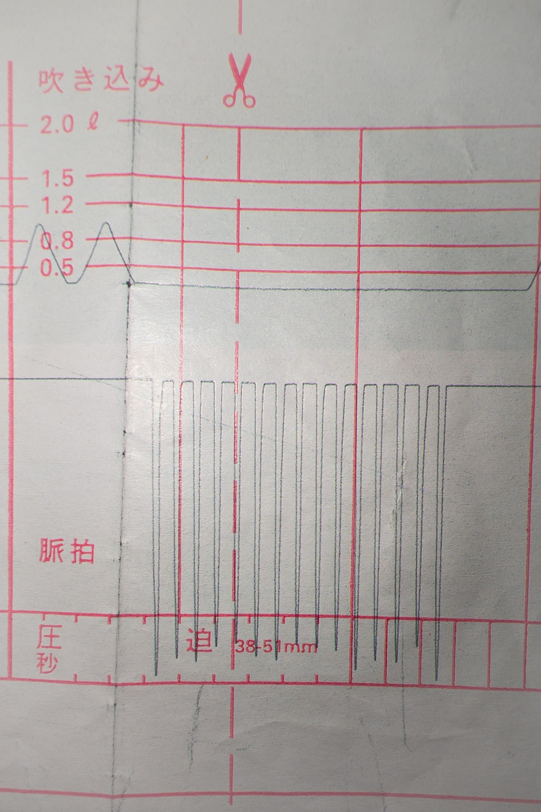
レサシアンなどの cpr マネキンを使うと図のようなデータが取れます。今のレサシアンならデジタル化されています。
画像は古いぼくの cpr トレーニングのログで、データは昔のプロトコルに従ったものです。なので、最近になって cpr を学んだ人たちにとっては不思議な波形をしています。
2 回の人工呼吸の後に 15 回の圧迫で終わってるのはなぜ？とかね。昔は 15 秒の間に 2 回の人工呼吸と 15 回の胸骨圧迫を 1 セットとして、4 セットを行った後に、2 回の吹込みの後に頸動脈で脈の有無を確認するというルーティングでした。
今現在の cpr プロトコルは 2 回の吹込みと 30 回の胸骨圧迫を 1 セットとして延々と繰り返すということになっています。
1 セットのペースコントロールは、15 秒という時間を用いては今は行われません。aed があるからです。
それと脈の確認は現在のバイスタンダーによる cpr ではありません。
詳細は jrc蘇生ガイドライン2020を参照してください。来年 2026 年の春になると、パブリックコメントの受付が終了したばかりの 2025 年改訂版が出版されます。
現在の cpr プロトコルとは異なるのでルーティング自体は参考になりません。ですが、吹込みのペースや胸骨圧迫のペース、圧迫がきちんとできているか、開放もきちんとできているか、といった基本技能のチェックはできます。
これが見れないと、どうにもこうにも不安なのですね。ちゃんと自分はできてるんだろうかって。
とは言ってもやはり一切の準備なしに、救急指令書の係の人の指示で、いきなり cpr を実施するのには不安を伴うのは当然です。ですから救命コーチングアプリ liv のようなスマートフォン・アプリで心構えとペースの把握だけでもしておくことは、cpr を実施する人の不安感を減らすのに役に立ちます。
また何度でも繰り返しますが、心肺停止している人を目の前にしたときに、ボーッと立ったまま救急車の到着を待つよりは、技術的には多少稚拙でも cpr を実施したほうが絶対にいいのです。
救命コーチングアプリ liv で学べないこともあります。乳幼児への cpr と溺者への cpr です。この 2 つは人工呼吸も必須であることから、このアプリでは練習することができません。
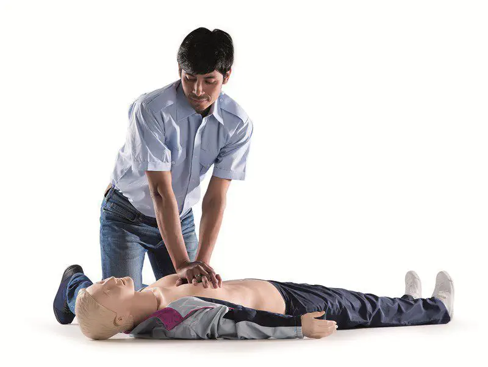
人工呼吸を含む cpr の練習を行うには レサシアン、リトルアン、ミニアン、リトルジュニア、レサシジュニアなどの cpr マネキンが必要になってきます。
これらの cpr マネキンを使うと、トレーニングで実施した cpr のデータを記録することができ、cpr の精度を確認することもできます。できれば定期的にこれらのマネキンを使った cpr トレーニングを、次のステップとして受けることをお勧めします。
胸部圧迫では実はどれくらいの深さま圧迫するのかということや、圧迫をしっかり開放することがとても重要です。それらをきちんとできているのかを確認しようとすると、どうしてもこれらの cpr マネキンによるトレーニングがかかせません。
また人工呼吸を含む cpr のトレーニングは、これらの cpr マネキンがないとできません。
ですから可能であれば、これらの cpr マネキンを使ったトレーニングを定期的に受けてください。トレーニングは最寄りの消防署、医療関係機関、npo 法人、ダイビングショップ (有料で 2 年毎にライセンス更新) などで開催されています。
ダイビングショップでの講習はだいたいが少人数制で、レサシアンやリトルアンをショップがレンタルして実施されます。交代制になりますが早朝から夜中までたっぷりとトレーニングできますし、データも取れます。
有料になりますが、徹底して取り組めます。2 年に 1 度は再トレーニングすることになるので、技術も衰えません。なのでぼくはダイビングショップでの cpr 受講をお勧めしています。cpr の受講はダイバーでなくても参加することができ、履修を証明する c カードも発行されます。
もちろん他のトレーニング機関でのトレーニングも cpr マネキンを使って行われますので、強くお勧めします。